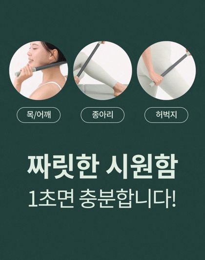
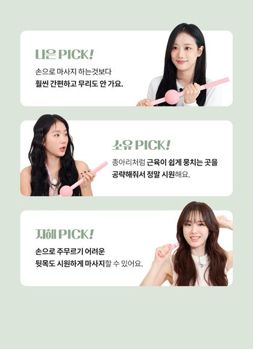
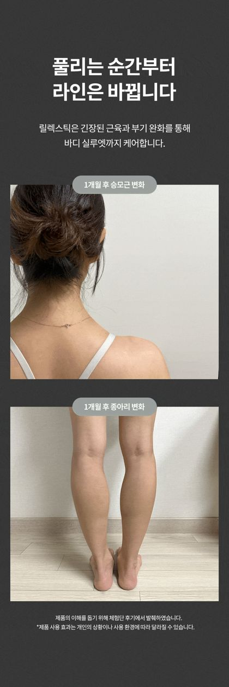
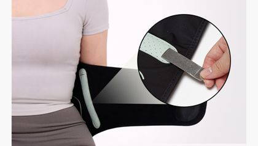
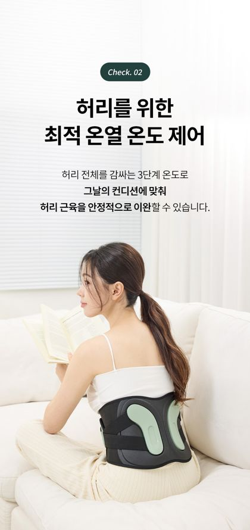
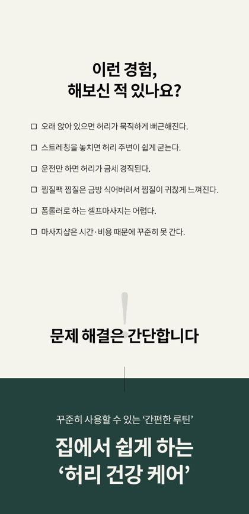

바리바디 제품별 상세페이지 진단
우리 3개 제품(릴렉스틱 · EMS 손목 · EMS 허리) 상세페이지를 요소 단위로 전수 분류하고, 잘 팔리는 벤치마크 18개 평균과 대조해 제품별 강점·문제·개선을 진단했습니다.
판단 기준은 좋은 상세페이지 공식(대5·중11·소55 3단 분류 / 골든 플로우 / 감정 곡선). · 2026-06-04
1. 한눈에 보기
각 요소를 페이지의 몇 %나 쓰는가. 벤치마크(18개 평균) 대비 강한 곳·빈 곳이 한눈에 드러납니다.
| 요소 | 릴렉스틱 | EMS 손목 | EMS 허리 | 벤치 평균 |
|---|---|---|---|---|
| 기능/구조 | 39% | 46% ↑ | 59% ↑↑ | 33% |
| 효과 — 증명형 | 1% ⚠ | 3% ⚠ | 0% ⚠ | 3.4% |
| 효과 — 연출형 | 21% ↑ | 11% ↑ | 16% ↑ | 5.2% |
| 신뢰 | 14% | 23% ↑ | 12% | 13.6% |
| 핵심가치/USP | 9% | 3% ⚠ | 2% ⚠ | 6.1% |
| 후킹 | 4% | 3% | 2% ⚠ | 5.7% |
| 문제제기 | 3% | 3% | 2% ⚠ | 5.1% |
| 사용가이드 | 7% | 6% | 2% | 4.7% |
| 구매정보/스펙 | 3% ⚠ | 3% ⚠ | 4% ⚠ | 10.1% |
| 디자인 | 0 | 0 | 0 | 1.5% |
| 총 이미지 | 71장 | 35장 | 51장 | — |
2. 릴렉스틱 A− · 가장 잘 만든 페이지
마사지 롤러 · 71장 · 스펙과시형(A) + 신뢰 하이브리드. 우리 3개 중 유일하게 USP가 한 줄로 또렷이 살아있는 페이지.
✅ 잘된 점
- USP가 한 줄로 살아있다. "1초면 충분한 짜릿한 시원함"이 명확하고, 페이지 전체에서 6번(#06·13·19·27·43·67) 변주된다. 우리 3개 중 유일하게 "그래서 뭐가 다른가"에 답한다.
- 신뢰 골격이 탄탄하다. 셀럽 PICK(나은·소유·지혜) → 대한민국 1등 → 현대·AK·롯데백화점·올리브영 입점 → 국대 트레이너 검증 → 1년 A/S. 스펙과시형에 신뢰를 얹은 하이브리드로 벤치마크 상위 골격.
- 가이드가 충실하다. 초보자 가이드 + 3테크닉(압박·플러싱·롤링) + 포인트 링 STEP. 마사지기는 "활용도 = 만족도 = 재구매·후기"라 결정적.
- Check 01~07 넘버링으로 본문을 묶고, 문제→USP→연출을 교차 반복해 71장의 지루함을 막았다.
⚠️ 문제점
- 효과 20%가 거의 다 "연출컷", 수치 증명이 약하다. #19에 "라인이 바뀐다(승모근 변화)" 전·후가 있긴 한데 GIF라 변화가 스쳐 지나가 대비가 약하고, 가동범위·근경도 같은 수치 증명은 없다. 양은 많은데 "예쁜 연출"에 치우쳐 설득의 무게가 약하다.
- 연출 GIF가 너무 멀리서 대충 찍혔다. 현장 지적 모델이 "쓰는 상황"은 보이는데, 정작 롤러가 지나갈 때 근육·살이 밀리고 눌리는 핵심 순간이 안 보인다. 그래서 "시원해 보이는 그림"은 되지만 "이거 효과 있겠다"는 확신을 못 준다. 같은 연출컷이라도 거리·앵글만 바꾸면 설득력이 달라지는 지점.
- 상단 문제제기가 얇다(3%). "피곤하고 뻐근했던 하루"(#14) 정도로 공감 강도가 약하고, 타겟 호명(#20)이 본문 중반에 묻혔다.
- FAQ가 없다. 구매 직전 의심("아프지 않나? 매일 써도 되나? 폼롤러랑 진짜 다른가?")을 받아주는 장치 부재.
🔧 개선 처방
1순위연출 GIF를 "근육이 밀리는 게 보이는" 근접컷으로 다시 찍는다. — 가장 눈에 띌 개선
· 카메라를 피부 가까이 — 롤러가 종아리·허벅지·승모근을 지날 때 근육이 눌렸다 펴지는(밀리는) 순간을 클로즈업 + 슬로우로
· 부위 1~2개(종아리·목/어깨)만 골라 디테일 GIF — "압력이 진짜 들어간다"가 눈에 보이게
· 멀리서 찍은 '상황컷'은 1~2장으로 줄이고, 핵심 자리는 근접 효과컷에 양보
→ "시원해 보이는" 컷보다 "효과 있어 보이는" 컷이 장바구니 전환을 만든다.
1순위효과를 "연출"에서 "증명"으로 한 단계 올린다.
· #19 "라인이 바뀐다"는 지금 GIF라 변화가 흘러가 버린다 → 왼쪽=전 / 오른쪽=후 정지 대칭컷으로 나란히 놓아 대비를 크게 (같은 자세·같은 앵글·같은 조명이 핵심)
· 폼롤러 평균 압력 대비 릴렉스틱 스틸봉 압력 ○○% ↑ — "같은 시간, 더 깊은 자극" (#31 비교를 수치로)
· 10분 사용 전·후 목/어깨 가동범위(ROM) 또는 근경도 측정 1컷
2순위상단 문제제기를 구체적 타겟으로 강화 (#20을 앞으로 + 1장 보강)
"하루 종일 모니터 앞 → 굳은 목·어깨 / 운동 뒤 뭉친 종아리 / 폼롤러는 크고 무거워 결국 안 꺼내게 되는 당신께"
3순위하단 FAQ 신설 (3~5문항)



3. EMS 손목 마사지기 C+ · USP가 기능에 묻혀 약함
TENS+EMS+온열 · 35장 · 신뢰 폭격형. 신뢰는 22개 제품 중 최상위급. USP(3중 설계)는 있지만 기능 설명에 묻혀 한 줄로 안 박혀, "비슷한 또 하나의 손목 EMS"로 보인다.
✅ 잘된 점
- 신뢰가 매우 강하다(23%). 물리치료사 정수진 검증·인터뷰, 출시 2개월 만에 3차 리오더, KC 인증, 해외 저널 연구 검증, 1년 A/S. 몸에 닿는 의료성 제품에 맞는 신뢰 폭격.
- "신경 + 근육 + 혈류 3중 케어" 메커니즘이 논리적이다. TENS/EMS/온열 3중 작동 + 3단계 온열 + 8모드·15단계로 기능 본문이 충실하다.
⚠️ 문제점
- USP가 있는데 기능에 묻혔다 — 가장 아까운 지점. "3중 설계(신경·근육·혈류 동시 케어)"(#09)가 사실상 이 제품의 USP인데, 별도의 차별 카피가 아니라 기능 설명조로 흘러가 한 줄로 안 박힌다. ① 기능 본문에 묻혀있고 ② "3중"이라는 메커니즘(스펙)으로만 말해 "그래서 나한테 뭐가 좋은데"라는 효용으로 번역되지 않았다. 바로랩 손목과 골격이 똑같은 만큼, 한 줄로 못 박으면 차별점이 안 보인다.
- 문제제기·후킹이 각 1장. "당신의 손목은 안녕하신가요"(#05)뿐. 손목 통증 타겟(마우스·스마트폰·육아)을 강하게 호명하지 못한다.
- 효과 14%가 전부 연출컷. 의료성 제품인데 효과 증명이 연구 저널 1장(#17)에 그친다.
- 구매정보 빈약 — FAQ 1장뿐, 스펙표·고시정보 없음.
🔧 개선 처방
1순위묻혀있는 "3중 설계" USP를 끌어올려 한 줄로 박고, 효용으로 번역한다. — 새로 만드는 게 아니라 있는 걸 승격
· "붙이는 게 아니라 풀어주는 손목 — 신경·근육·혈류를 한 번에(TENS·EMS·온열 3중)"
· "파스 한 장으로 안 되는 이유 — 손목만을 위한 3중 케어"
· "겉이 아니라 속을 푸는 손목 관리 — 온열까지 더한 3중 손목 EMS"
핵심: "3중 설계"(스펙)를 "그래서 시큰한 손목이 풀린다"(효용)로 한 줄 번역.
2순위문제제기를 구체적 타겟으로 (1~2장 추가)
"마우스 잡을 때 시큰, 아이 안을 때 욱신, 자고 일어나도 그대로인 손목 — 파스·손목보호대는 '겉'만 잡습니다."
3순위효과 증명 + 스펙표·FAQ 보강
🆚 같은 카테고리 경쟁 비교 — 바로랩 텐스온 손목 (벤치마크 33장)
손목 TENS+EMS 카테고리의 대표 강자. 골격은 거의 동일(신뢰 폭격 + 전문가 + Check 기능)하지만, 결정적인 곳에서 갈린다.
| 항목 | 바리바디 손목 (35장) | 바로랩 텐스온 (33장) | 판정 |
|---|---|---|---|
| 효과 증명 | 연출컷 위주 + 해외 저널 1장 | 임상 수치 — 피로도 64% 개선 · 대상자 100% 개선 응답 | 바로랩 압승 |
| 차별 USP | 3중(온열 포함)인데 한 줄로 안 박음 | "국내 유일 특허 TENS-ON" + 보호대 겸 마사지기 폼팩터로 또렷 | 바로랩 우세 |
| 문제제기 | 1장 "손목 안녕하신가요"(약함) | "하루 1만 회 혹사" + 기존 관리법(공기압·젤패드·물리치료) 한계 비교 | 바로랩 우세 |
| 신뢰 무기 | 물치 검증·3차 리오더·저널·KC·1년 A/S | Forbes 1위·검색 1위·누적판매·리뷰 11,500·KM제약 협업·특허·KC | 바로랩 다양 |
| 기능 폭 | TENS+EMS+온열 3중 · 온열 3단계 · 15단계 | TENS+EMS 2중 · 8모드 · 8단계 | 우리 우세 |
| A/S | 1년 무상 A/S 명시 | 미표기 | 우리 우세 |
- 효과를 임상 수치로 — 바로랩의 "피로도 64% 개선·100% 개선 응답"처럼, 자가설문·실측 수치 1개라도.
- 강한 문제제기 — "하루 1만 회 혹사" 급의 구체적 타겟 호명 + 기존 관리법(파스·보호대)의 한계.
- 한 줄 차별 선언 — 바로랩은 "특허 TENS-ON"으로 또렷. 우리는 "온열까지 더한 유일한 3중 손목 케어"를 USP로.


4. EMS 허리 마사지기 B− · 스펙 과적재, 상단 붕괴
EMS+온열+지지 벨트 · 51장 · 하드웨어 설계 디테일은 22개 제품 중 최고. 그러나 기능이 59%로 과적재되고 상단 감정 퍼널이 붕괴.
✅ 잘된 점
- 기능/구조 설계 디테일이 22개 제품 중 최고 수준. 듀얼 스테인리스 지지대 26°커브, ABS 스파인 패널, 요추 전만 서포트, 온열 3단계(38/42/45℃), 6모드·16단계, 2500mAh, 과열 차단 안전. 엔지니어링 설득력은 압도적.
- 전문가 2명 검증(물리치료사 신승용 + 국가대표 의무트레이너)과 "온열 전 EMS 권장·저온화상 주의" 같은 사용 디테일.
⚠️ 문제점
- 기능 59% — 과적재. 22개 중 기능 비중 1위(미락·한일보다 높다). "스펙은 압도적인데 왜 사야 하는지 감정이 안 따라오는" 전형.
- 상단 퍼널이 사실상 붕괴. 51장 중 후킹·문제·USP가 각 1장(합 3장). #04 문제제기 후 곧바로 기능 본문 30장으로 직행한다.
- 진짜 USP가 한 줄로 안 박힌다. "EMS로 풀고 + 스테인리스 서포트로 잡아준다(케어 + 자세 지지 동시)"가 이 제품의 차별점인데 #11 "이런 점이 다릅니다"로 약하게 흘려보낸다.
- 효과 16%도 전부 착용 연출컷, 가이드·구매정보 빈약.
🔧 개선 처방
1순위상단 퍼널 재건 — 문제제기(2~3장) → USP 한 줄 → 그 다음 기능.
"오래 앉으면 뻐근한 허리 / 굽은 자세로 굳은 등 / 무거운 것 든 뒤 욱신 — 파스도 하루뿐, 안마의자는 집에만"
· "푸는 EMS + 잡아주는 스테인리스 서포트 — 통증 케어와 자세 지지를 한 번에"
· "하루 20분, 풀어주고(EMS·온열) 받쳐주는(요추 서포트) 허리 벨트"
2순위기능 30장을 재배치 — POINT를 4개로 압축하고, 각 POINT 끝에 "효용 한 줄".
각 POINT 끝에 "그래서 당신에게: ○○" 한 줄을 끼워 감정 곡선 회복.
3순위효과 증명 + 구매정보 보강



5. 3개 관통 공통 약점 & 우선 액션
공통① 효과 = 양은 많은데 "안 보이거나 흘러간다" 임팩트 최대
셋 다 효과 연출 비중은 벤치(연출 5.2%·증명 3.4%)보다 높은데(11~21%) 정작 "증명형"은 거의 0이다. 효과 컷을 증명형(전후·수치·임상·실험)과 연출형(라이프스타일·상황컷)으로 갈라보면 — 릴렉스틱 효과 16장 중 증명형 1 : 연출형 15, 허리 0:8, 손목 1:4. ① 멀리서 찍혀 근육이 밀리는 게 안 보이고(릴렉스틱 연출 GIF), ② 전·후가 GIF라 변화가 스쳐 지나가고(릴렉스틱 라인 변화), ③ 수치 증명이 없다(전부 연출컷). 벤치 강자(리칼지메디 126cc 감소·열화상)는 수치·실험으로 증명한다.
해법은 "추가"가 아니라 "촬영·배치"다 — ① 연출컷을 근접·근육 밀림이 보이게 재촬영 ② 전·후는 왼쪽(전)/오른쪽(후) 정지 대칭컷으로 대비를 크게 ③ 수치 1개(가동범위·자가설문 등).
공통② 상단 감정 퍼널(USP·문제제기)이 약하다
손목은 USP(3중 설계)가 있는데 기능에 묻혔고, 허리는 후킹·문제·USP가 각 1장. 신뢰·기능은 충분한데 "내 얘기네 → 그래서 이게 답" 단계가 약해 스펙이 붕 뜬다. 손질은 제품마다 다르다 — 손목은 묻힌 USP를 한 줄로 "승격", 허리는 USP를 한 줄로 "신설", 셋 다 문제제기 1~2장 보강. 가장 싸고 효과 큰 손질.
공통③ 구매정보·FAQ·고시·디자인이 빈약
자사몰이라 가볍게 갔지만 구매 직전 의심 해소(FAQ)와 스펙표·고시가 부족하고, 디자인 소구는 3개 모두 0. 릴렉스틱엔 FAQ 자체가 없다.
- ☐ USP를 한 줄로 — 손목: 묻힌 "3중 설계"를 인트로 직후로 승격 + 효용 번역 / 허리: "EMS로 풀고 서포트로 잡는" USP 신설 (즉시·저비용·효과 최대)
- ☐ 연출컷 촬영·배치 손질 — 근육이 밀리는 근접컷으로, 전·후는 좌(전)/우(후) 정지 대칭컷으로 (특히 릴렉스틱)
- ☐ 3개 모두 문제제기 1~2장 보강 — 구체적 타겟 호명("하루 1만 회 혹사" 급)
- ☐ 3개 모두 효과 수치 1개 — 가동범위·자가설문·써모그래피 중 1개
- ☐ 허리 기능 30장 → POINT 4개로 압축 + 각 POINT 끝에 효용 한 줄
- ☐ FAQ·스펙표·고시 보강 (특히 릴렉스틱 FAQ 신설)